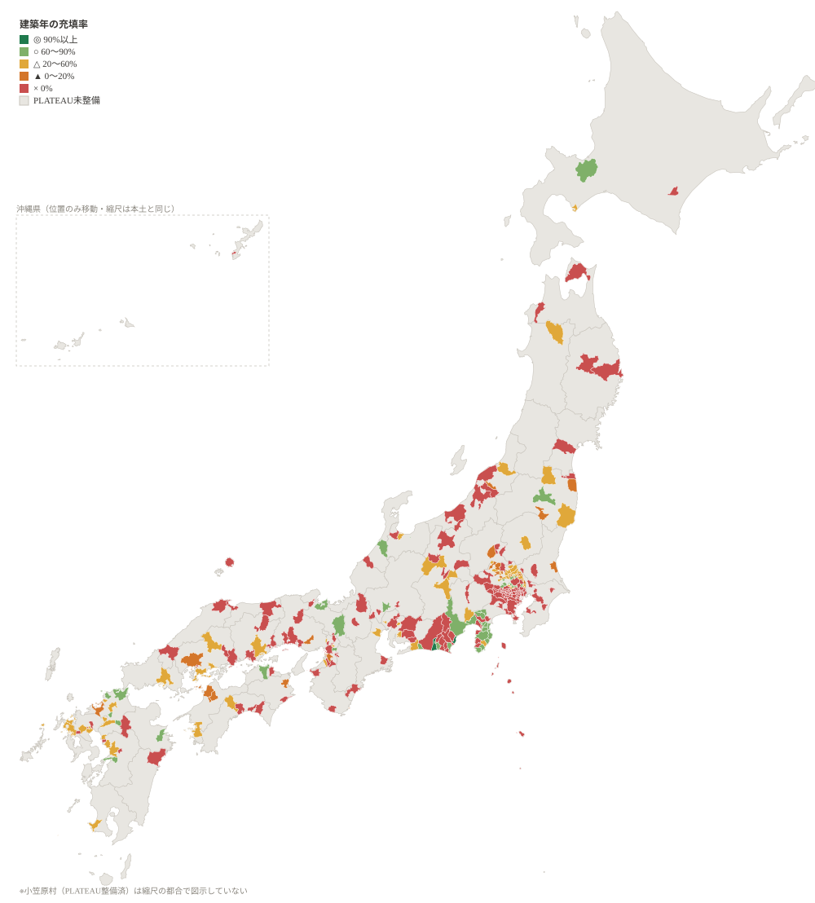

3D都市モデルの属性が、自治体ごとに実際どれだけ入っているかの実測
公式が公表しているのは「その属性が仕様上あるか」の一覧（○×）です。実測すると 両方向に食い違います。建築年が○のいわき市は実測51.3%、白河市は37.8%。 逆に空欄の宗像市は86.2%、北九州市は85.0%（いずれも2020年度データ同士の比較）。 ○だから使えるとも、空欄だから使えないとも言えません。 なおこの公式一覧は56都市ぶんで、最終更新は2021年8月6日。 PLATEAUは現在306自治体で、残る250自治体には参照できる一覧がありません。
このカルテは全国306自治体・2,409,305棟のCityGMLを実際に開いて、属性の充填率を測ったものです。 使う前に「自分の街でその分析が成り立つか」が分かります。
ただしカルテは「始められるか」に答えるもので、「うまくいくか」は保証しません。 属性が揃っていることは必要条件であって十分条件ではありません。

段階評価にしている理由。全市を読んだ5都市で市域を10帯に分けて充填率のばらつきを測ったところ、 幅は1.6〜17.6ポイントでした。「94% 対 19.8%」の桁の差を判定するには十分ですが、 「94.1% 対 91.3%」の順位付けには足りません。だから小数ではなく段階で出しています。
標本の取り方。1自治体あたり建物数の多い3メッシュを読んでいます。 全メッシュを読むと306自治体で数十GBになり現実的でないためです。 なおメッシュをコード順に取ると市域の縁を引いて建物0件になります（実際に起きました）。 非圧縮サイズの大きいメッシュを選ぶことで回避しています。
ダミー値。usage=461（不明）、storeysAboveGround=9999、
measuredHeight=-9999、surveyYear=0001 は
「値が入っているが情報が無い」ものなので、充填率から除いています。
「年度」は整備年度で測量年ではありません。実際の測量年は
uro:surveyYear にあります。時系列で使うなら必ずこちらを見てください。
人口推定：用途60%以上 かつ 階数60%以上。用途で住宅を特定し、階数で床面積を作ります。 検証済みの手法では、低層密集市街地で国勢調査人口を中央値6.4〜6.7%の誤差で再現できました。
高さ解析：高さ90%以上 かつ 高さ種別60%以上。
高さの値だけでは軒高か最高高さか分からないので、lod1HeightType が必要です。
耐震・被害推定：建築年40%以上 かつ 構造種別60%以上。 新耐震（1981年6月）前後の判別と、木造/非木造の判別に使います。
時系列比較：測量年60%以上。整備年度が違っても測量が同じなら現実の変化は含まれません。